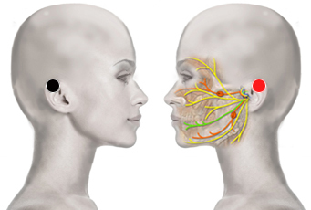

Leny
Par
oreja - oreja

Generalidades:
Intoxicación, regula las funciones de los pares craneales, tics nerviosos, parálisis facial, neuralgia del trigémino (migrañas, cefaleas). Inflama el mastoides que es la base de inervación del nervio trigémino.
Puede aparecer como consecuencia de lesiones traumáticas o accidentes vasculares cerebrales. Hipo. Las paralisis faciales pueden ser resultado de los pares oreja, supraespinoso, pomulo-riñon, palma. O bien ser provocada por los virus del herpes.